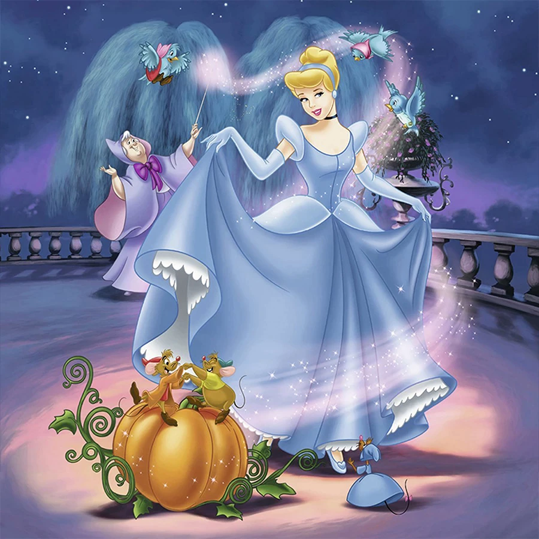

Cinderela
Cinderela era filha de um comerciante rico. Depois que seu pai morreu, sua madrasta tomou conta da casa que era de Cinderela. Cinderela então, passou a viver com sua madrasta malvada, junto de suas duas filhas que tinham inveja da beleza de Cinderela e transformaram-na em uma serviçal. Ela tinha de fazer todos os serviços domésticos e ainda era alvo de deboches e malvadezas. Seu refúgio era o quarto no sótão da sua própria casa e seus únicos amigos: os animais da floresta.
Um belo dia, é anunciado que o Rei realizará um baile para que o príncipe escolha sua esposa dentre todas as moças do reino. No convite, distribuído a todos os cidadãos, havia o aviso de que todas as moças deveriam comparecer ao Baile promovido pelo Rei.
A madrasta de Cinderela sabia que ela era a mais bonita da região, então disse que ela não poderia ir porque não tinha um vestido apropriado para a ocasião. Cinderela, então, costurou um vestido com a ajuda de seus amigos da floresta. Passarinhos, ratinhos e esquilos a ajudaram a fazer um vestido de retalhos, mas muito bonito. Porém, a madrasta não queria que Cinderela comparecesse ao baile de forma alguma, pois sua beleza impediria que o príncipe se interessasse por suas duas filhas. Sendo assim, ela e as filhas rasgaram o vestido, dizendo que não tinham autorizado Cinderela a usar os retalhos que estavam no lixo. Fizeram isso de última hora, para impedir que a moça tivesse tempo para costurar outro.
Muito triste, Cinderela foi para seu quarto no sótão e ficou à janela, olhando para o Castelo na colina. Chorou, chorou e rezou muito. De suas orações e lágrimas, surgiu sua Fada-madrinha que confortou a moça e usou de sua mágica para criar um lindo vestido para Cinderela. Também surgiu uma linda carruagem e os amiguinhos da floresta foram transformados em humanos, cocheiro e ajudantes de Cinderela. Antes de sua afilhada sair, a Fada-madrinha lhe deu um aviso: a moça deveria chegar antes da meia-noite, ou toda a mágica iria se desfazer aos olhos de todos.
Cinderela chegou à festa como uma princesa. Estava tão bonita, que não foi reconhecida a não ser pela madrasta,que passou a noite inteira dizendo para as filhas que achava conhecer a moça de algum lugar, mas não conseguia dizer de onde. O príncipe, tão-logo a viu a convidou para dançar. Cinderela e o príncipe dançaram e dançaram a noite inteira. Conversaram e riram como duas almas gêmeas e logo se perceberam feitos um para o outro.
Acontece que a fada-madrinha tinha avisado que toda a magia só duraria até à meia-noite e um. Quando o relógio badalou as doze batidas e um minuto, Cinderela teve de sair correndo. Foi quando deixou um dos seus sapatinhos de cristal na escadaria. O príncipe, muito preocupado por não saber o nome da moça ou como reencontrá-la, pegou o pequeno sapatinho e saiu em sua busca no reino e em outras cidades. Muitas moças disseram ser a dona do sapatinho, mas o pé de nenhuma delas se encaixava no objeto.
Quando o príncipe bateu à porta da casa de Cinderela, a madrasta trancou a moça no sótão e deixou apenas que suas duas filhas experimentassem o sapatinho. Apesar das feiosas se esforçarem, nada do sapatinho de cristal servir. Foi quando um ajudante do príncipe viu que havia uma moça na janela do sótão da casa.
Sob as ordens do príncipe, a madrasta teve de deixar Cinderela descer. A moça então experimentou o sapatinho, mas antes mesmo que ele servisse em seus pés, o príncipe já tinha dentro do seu coração a certeza de que havia reencontrado o amor de sua vida. Cinderela e o príncipe se casaram em uma linda cerimônia, e anos depois se tornariam Rei e Rainha, famosos pelo bom coração e pelo enorme senso de justiça. Cinderela e o príncipe foram felizes para todo o sempre.